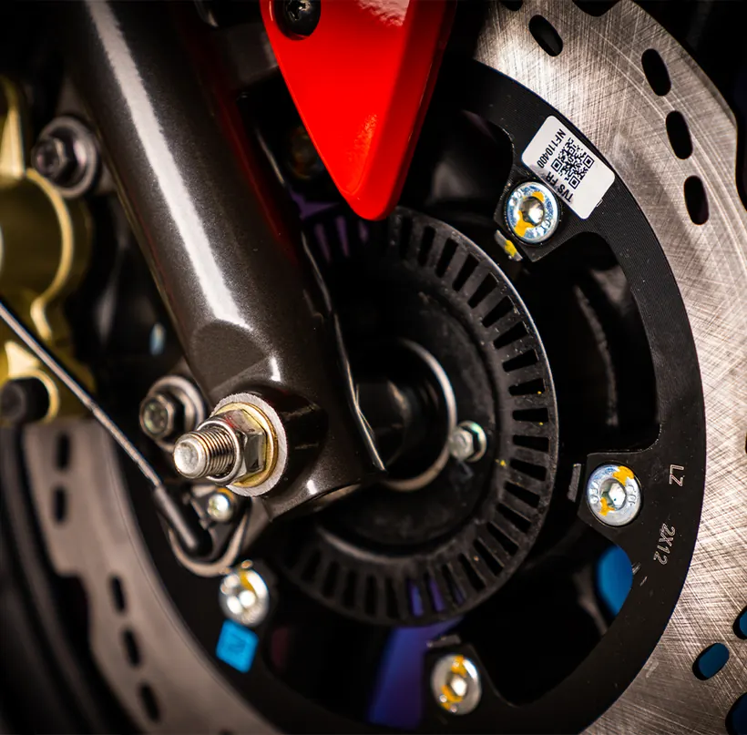
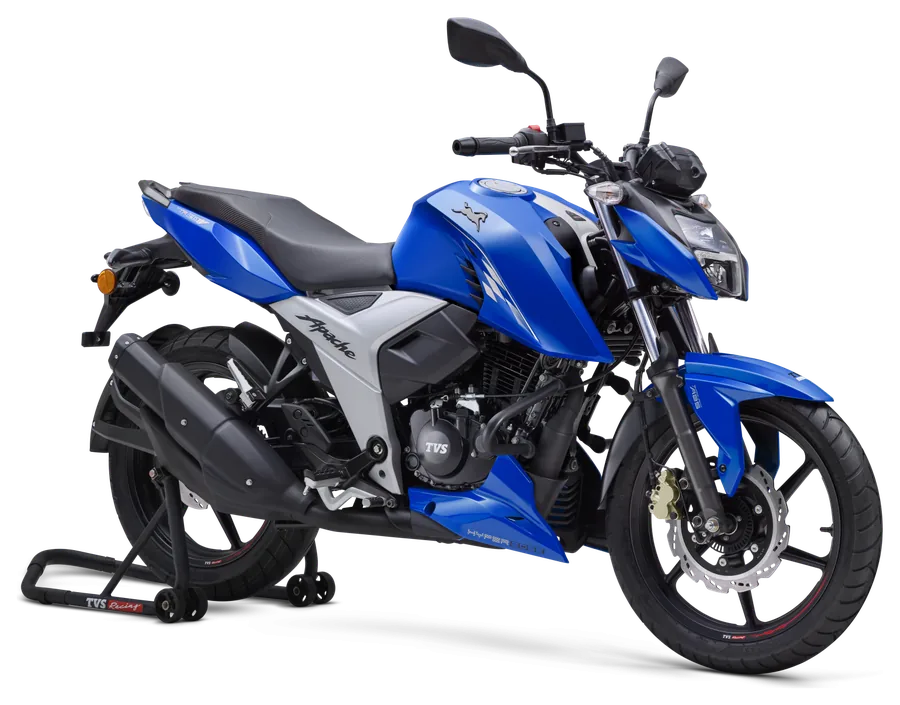
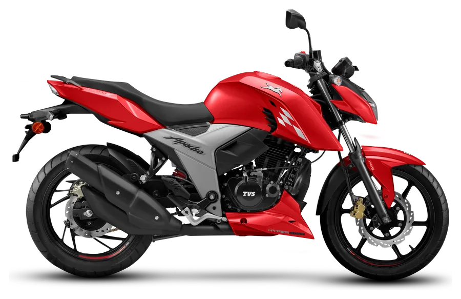
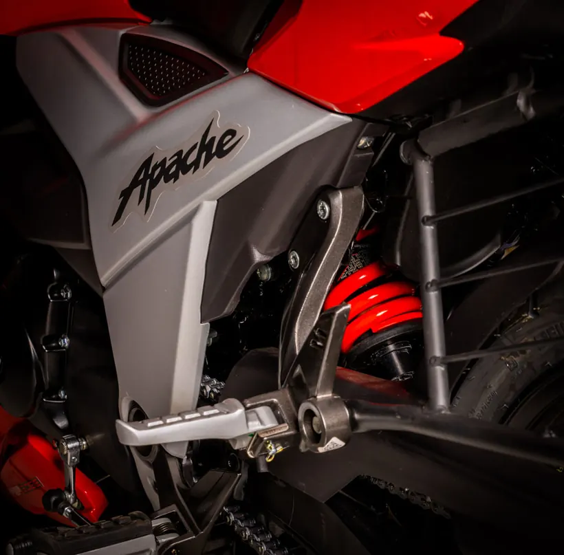
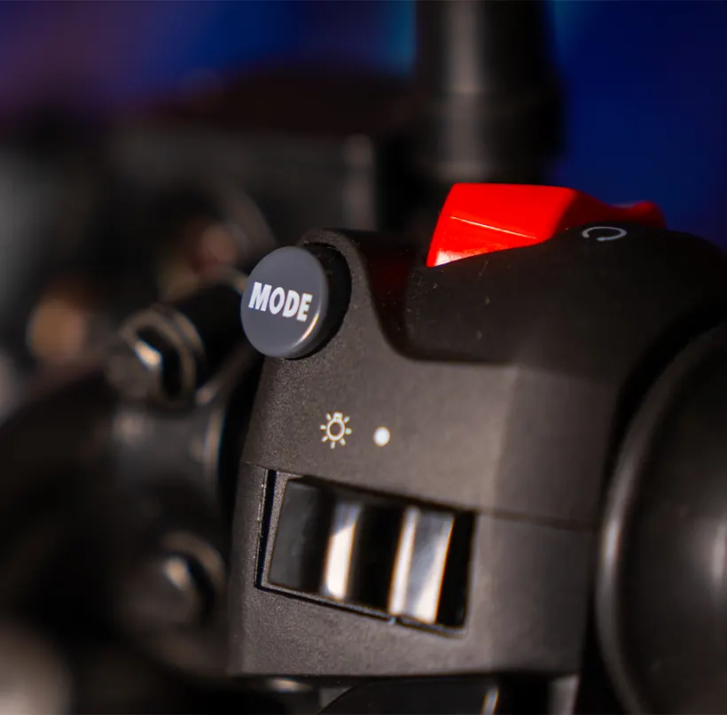

ABS delantero
Frena de forma más segura y estable, sobre todo en una emergencia o con la pista mojada.
Prototipo de propuesta DataLab. No es el sitio oficial de TVS Perú: los formularios no envían datos y la información es referencial.No es el sitio oficial: los formularios no envían datos.
Deportiva
Creada con la herencia de un campeón: diseño compacto de carrera, forma agresiva y la potencia para dominar la ciudad.


La TVS Apache RTR 160 es una moto deportiva de 159.7 cc y 17.4 HP con freno delantero ABS, suspensión trasera monoshock SHOWA y 3 modos de manejo. Tiene caja de 5 velocidades, tanque de 12 litros y un rendimiento referencial de 190 km por galón. En el Perú la distribuye Indian Motos y se vende en 58 puntos de 17 departamentos.
Ficha actualizada el 4 de noviembre de 2026 · Fuente: ficha técnica de TVS Perú y red de puntos de Indian Motos.

Frena de forma más segura y estable, sobre todo en una emergencia o con la pista mojada.

Suspensión trasera de alto desempeño: más estabilidad y mejor absorción de los baches.

Cambia la respuesta del motor según la ruta y tu estilo, con un botón en el manubrio.
Una sola fuente de datos alimenta la ficha, el cotizador y los datos estructurados: la potencia es la misma en todas partes.
| Motor | 4 tiempos, OHC, 4 válvulas |
|---|---|
| Cilindrada | 159.7 cc |
| Potencia máxima | 17.4 HP a 8000 rpm |
| Torque máximo | 14.8 Nm a 6500 rpm |
| Transmisión | 5 velocidades |
| Tanque | 12 litros |
| Freno delantero | Disco con ABS |
| Suspensión trasera | Monoshock SHOWA |
| Modos de manejo | 3 |
| Rendimiento* | 190 km/gal |
| Colores | Azul y rojo |
*Rendimiento referencial en condiciones ideales de manejo. Datos tomados de tvsperu.com; Indian Motos valida la ficha final.
Elige la Apache RTR 160 si quieres ABS, 3 modos de manejo y el mejor rendimiento de la familia: 190 km por galón. La RTR 200 es la más potente (20.2 HP) y suma inyección y embrague antirrebote. La RTR 180 y la RTR 180 UG tienen 177.4 cc y suspensión con gas Nitrox; la UG lleva tanque de 16 litros.
| Apache RTR 160 | Apache RTR 180 | Apache RTR 180 UG | Apache RTR 200 | |
|---|---|---|---|---|
| Cilindrada | 159.7 cc | 177.4 cc | 177.4 cc | 197.75 cc |
| Potencia | 17.4 HP | 16.8 HP | 16.7 HP | 20.2 HP |
| Torque | 14.8 Nm a 6500 rpm | 15.5 Nm a 6000 rpm | 15.5 Nm a 6500 rpm | 18.1 Nm a 7000 rpm |
| Rendimiento* | 190 km/gal | 160 km/gal | 160 km/gal | 130 km/gal |
| Tanque | 12 L | 12 L | 16 L | 12 L |
| Transmisión | 5 velocidades | 5 velocidades | 5 velocidades | 5 velocidades |
| Frenos | ABS delantero | — | — | ABS |
| Suspensión trasera | Monoshock SHOWA | Con gas Nitrox | Con gas Nitrox | SHOWA |
| Destaca por | 3 modos de manejo | Tablero analógico-digital | Tablero analógico-digital | Inyección Twin Spray y embrague antirrebote |
*Rendimiento referencial de cada ficha; «—» indica un dato que la ficha actual no publica. Fuente: fichas técnicas de tvsperu.com, 4 de noviembre de 2026.
Elige tu departamento o usa tu ubicación: te mostramos los puntos de venta de motos más cercanos.
Respuestas basadas en la ficha técnica de TVS Perú, revisadas el 4 de noviembre de 2026.
159.7 cc. Su motor es de 4 tiempos, OHC y 4 válvulas, con caja de 5 velocidades.
17.4 HP a 8000 rpm y un torque de 14.8 Nm a 6500 rpm, según la ficha técnica de TVS Perú.
Hasta 190 km por galón, como dato referencial de la ficha. El consumo real cambia con el estilo de manejo, la carga, el tráfico y el mantenimiento.
Sí. Tiene ABS en el freno delantero, que evita que la rueda se bloquee en una frenada fuerte o con la pista mojada.
En esta ficha se muestra en azul y en rojo. Confirma la disponibilidad de cada color con el concesionario al cotizar.
En los 58 puntos de venta de motos TVS de 17 departamentos. En «¿Dónde comprarla?» eliges tu departamento o usas tu ubicación para ver los más cercanos.
En cualquiera de los 51 talleres autorizados TVS para motos, con repuestos originales que mantienen vigente la garantía.
La RTR 200 tiene más cilindrada (197.75 cc frente a 159.7 cc) y más potencia (20.2 HP frente a 17.4 HP), con inyección y embrague antirrebote. La RTR 160 rinde más: 190 km por galón frente a 130. Las dos tienen ABS.
Deportivas
Respuesta rápida y suspensión trasera con gas Nitrox.
Deportivas
Inyección Twin Spray, ABS y embrague antirrebote.